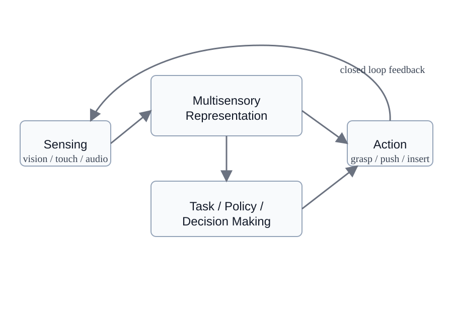

About
This proposed half-day ICRA 2027 workshop brings together two complementary perspectives: multisensory robot learning and task-driven closed-loop manipulation. The core idea is simple: robots should not only have access to more senses, but also learn when and how to use them during manipulation.
The workshop will focus on robot systems that combine vision with touch, force, sound, proprioception, and other sensing modalities to support robust perception, representation learning, planning, and adaptive control.
The final title and scientific framing are still under discussion among the organizers.

Topics of Interest
- Multisensory robot learning beyond vision-language-action
- Task-driven sensing and active perception for manipulation
- Tactile, force, audio, proprioceptive, and other non-visual sensing
- Representation learning and sensor fusion for embodied systems
- Uncertainty-aware perception, reasoning, and control
- Adaptive manipulation and closed-loop decision making
- Simulation-to-real transfer, data efficiency, and robustness
- Benchmarks, systems, and real-world robot applications
Tentative Program
This will be a half-day workshop. The exact schedule is still being finalized.
| Opening | Workshop introduction and motivation |
|---|---|
| Invited talks | 3–4 invited talks from academia and/or industry |
| Contributed presentations | Spotlights or short oral presentations |
| Poster / demo session | Interactive discussion and demonstrations |
| Panel | Discussion on multisensory robotics and closed-loop manipulation |
| Closing | Summary and next steps |
Organizers
The final organizer roster is being consolidated.
Workshop Co-Leads: Hanyi Zhang, Jian Liu, Thang Pham
Additional Organizers: To be finalized based on the merged proposal.
Invited Speakers: To be confirmed.
Important Dates
| Workshop proposal deadline | November 2, 2026 |
|---|---|
| Workshop acceptance | TBD by ICRA 2027 |
| Paper submission | TBD |
| Notification | TBD |
| Workshop day | TBD (ICRA 2027 workshop program) |
Contact
Contact email: TBD
For the draft call for papers, see the CFP page.